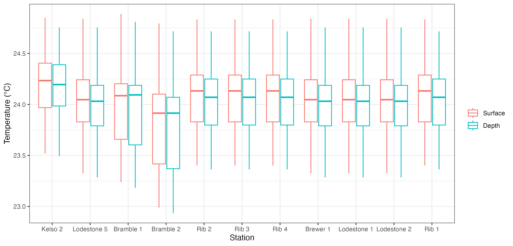
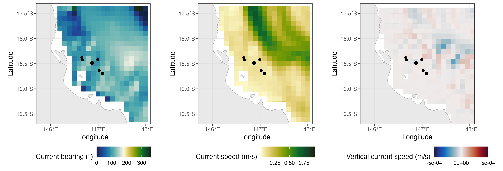

vignettes/extractBlue.Rmd
extractBlue.RmdThis functionality of the remora package allows users to
integrate acoustic telemetry data and Bluelink Reanalysis
(BRAN) environmental data. Since this is a reanalysis data with
10-km spatial resolution, the user will benefit from a dataset with
daily resolution and no gaps, which are common in remotely sensed data
due to cloud cover. Again, we advocate for users to first undertake a
quality control step using the runQC() function and
workflow before further analysis (see vignette('runQC')),
however the functionality to append Bluelink (BRAN) environmental data
will work on any dataset that has at the minimum spatial coordinates and
a timestamp for each detection event. A benefit of using Bluelink (BRAN)
data in your analyses of animal movements is that data can be obtained
in 3D, ranging from the ocean surface all the way to 4,509 m in
depth.
The extractBlue() function can be used to obtain
environmental data anywhere in the world.
This function allows users to download and process a range of daily
oceanographic variables (between 1993 - present) housed within the Bluelink
(BRAN). Information about the Bluelink (BRAN) variables currently
avaiable for download using remora can be found using
imos_variables(). These datasets can also be manually
downloaded with daily, weekly or annual resolutions through the NCI
portal.
Variables include current speed at both horizontal (in both x (u) and
y (v) directions) and vertical planes (i.e. ocean_w will
provide data on current speed in the vertical plane), and other
environmental variables at depths ranging between the ocean surface to
4,905 m.
| Variable | Platform | Temporal resolution | Units | Function to use | Description | Source |
|---|---|---|---|---|---|---|
| bathy | Composite raster product |
|
meters | extractEnv() | Australian Bathymetry and Topography Grid. 250 m resolution. | Geosciences Australia |
| dist_to_land | Raster product |
|
kilometers | extractEnv() | Distance from nearest shoreline (in km). Derived from the high-resolution Open Street Map shoreline product. | This package |
| rs_sst | Satellite-derived raster product | daily (2002-07-04 - present) | degrees Celcius | extractEnv() | 1-day multi-swath multi-sensor (L3S) remotely sensed sea surface temperature (degrees Celcius) at 2 km resolution. Derived from the Group for High Resolution Sea Surface Temperature (GHRSST) | IMOS |
| rs_sst_interpolated | Raster product | daily (2006-06-12 - present) | degrees Celcius | extractEnv() | 1-day interpolated remotely sensed sea surface temperature (degrees Celcius) at 9 km resolution. Derived from the Regional Australian Multi-Sensor Sea surface temperature Analysis (RAMSSA, Beggs et al. 2010) system as part of the BLUElink Ocean Forecasting Australia project | IMOS |
| rs_chl | Satellite-derived raster product | daily (2002-07-04 - present) | mg.m-3 | extractEnv() | Remotely sensed chlorophyll-a concentration (OC3 model). Derived from the MODIS Aqua satellite mission. Multi-spectral measurements are used to infer the concentration of chlorophyll-a, most typically due to phytoplankton, present in the water (mg.m-3). | IMOS |
| rs_current | Composite raster product | daily (1993-01-01 - present) | ms-1; degrees | extractEnv() | Gridded (adjusted) sea level anomaly (GSLA), surface geostrophic velocity in the east-west (UCUR) and north-south (VCUR) directions for the Australasian region derived from the IMOS Ocean Current project. Two additional variables are calculated: surface current velocity (ms-1) and bearing (degrees). | IMOS |
| rs_salinity | Satellite-derived raster product | weekly (2011-08-25 - 2015-06-07) | psu | extractEnv() | 7-day composite remotely sensed salinity. Derived from the NASA Aquarius satellite mission (psu). | IMOS |
| rs_turbidity | Satellite-derived raster product | daily (2002-07-04 - present) | m-1 | extractEnv() | Diffuse attenuation coefficient at 490 nm (K490) indicates the turbidity of the water column (m-1). The value of K490 represents the rate which light at 490 nm is attenuated with depth. For example a K490 of 0.1/meter means that light intensity will be reduced one natural log within 10 meters of water. Thus, for a K490 of 0.1, one attenuation length is 10 meters. Higher K490 value means smaller attenuation depth, and lower clarity of ocean water. | IMOS |
| rs_npp | Satellite-derived raster product | daily (2002-07-04 - present) | mgC.m_2.day-1 | extractEnv() | Net primary productivity (OC3 model and Eppley-VGPM algorithm). Modelled product used to compute an estimate of the Net Primary Productivity (NPP). The model used is based on the standard vertically generalised production model (VGPM). The VGPM is a “chlorophyll-based” model that estimates net primary production from chlorophyll using a temperature-dependent description of chlorophyll-specific photosynthetic efficiency. For the VGPM, net primary production is a function of chlorophyll, available light, and the photosynthetic efficiency. The only difference between the Standard VGPM and the Eppley-VGPM is the temperature-dependent description of photosynthetic efficiencies, with the Eppley approach using an exponential function to account for variation in photosynthetic efficiencies due to photoacclimation. | IMOS |
| moor_sea_temp | Fixed sub-surface moorings | hourly | degrees Celcius | extractMoor() | Depth-integrated in-situ, hourly time-series measurements of sea temperature (degrees Celcius) at fixed mooring locations | IMOS |
| moor_psal | Fixed sub-surface moorings | hourly | psu | extractMoor() | Depth-integrated in-situ, hourly time-series measurements of salinity (psu) at fixed mooring locations | IMOS |
| moor_ucur | Fixed sub-surface moorings | hourly | ms-1 | extractMoor() | Depth-integrated in-situ, hourly time-series measurements of subsurface geostrophic current velocity in the east-west direction (ms-1) at fixed mooring locations | IMOS |
| moor_vcur | Fixed sub-surface moorings | hourly | ms-1 | extractMoor() | Depth-integrated in-situ, hourly time-series measurements of subsurface geostrophic current velocity in the north-south direction (ms-1) at fixed mooring locations | IMOS |
| BRAN_temp | 3D Raster product | daily (1993-01-01 - 2023-12-31) - waiting for new Bluelink model | degrees Celcius | extractBlue() | Water temperature at specified depth from the surface to 4,509-m depth | Bluelink (CSIRO) |
| BRAN_salt | 3D Raster product | daily (1993-01-01 - 2023-12-31) - waiting for new Bluelink model | psu | extractBlue() | Water salinity at specified depth from the surface to 4,509-m depth | Bluelink (CSIRO) |
| BRAN_cur | 3D Raster product | daily (1993-01-01 - 2023-12-31) - waiting for new Bluelink model | ms-1; degrees clockwise | extractBlue() | Geostrophic velocity in the east-west (UCUR) and north-south (VCUR) directions from the surface to 4,509-m depth. Two additional variables are calculated: current velocity (ms-1) and bearing (degrees). | Bluelink (CSIRO) |
| BRAN_wcur | Raster product | daily (1993-01-01 - 2023-12-31) - waiting for new Bluelink model | ms-1 | extractBlue() | Vertical current speed in the water column is calculated (negative = downwards; positive = upwards) using the layers available between the surface to 200-m depths. | Bluelink (CSIRO) |
| BRAN_ssh | Raster product | daily (1993-01-01 - 2023-12-31) - waiting for new Bluelink model | meters | extractBlue() | Sea surface height at the water surface | Bluelink (CSIRO) |
| BRAN_mld | Raster product | daily (1993-01-01 - 2023-12-31) - waiting for new Bluelink model | meters | extractBlue() | Mixed layer depth in relation to the water surface | Bluelink (CSIRO) |
| BRAN_wind | Raster product | daily (1993-01-01 - 2023-12-31) - waiting for new Bluelink model | ms-1; degrees clockwise | extractBlue() | Wind forcing at the water surface in the east-west (uwind) and north-south (vwind) directions. Two additional variables are calculated: wind velocity (ms-1) and bearing (degrees). | Bluelink (CSIRO) |
In this vignette we will explore some examples for accessing and integrating Bluelink (BRAN) data, both at depth and at the water surface.
extractBlue() function
The primary function to extract and append Bluelink (BRAN) data to
telemetry data is the extractBlue() function. Lets start
with a dataset that has undergone quality control (see
vignette('runQC')).
library(tidyverse)
library(raster)
library(ggspatial)
## Example dataset that has undergone quality control using the `runQC()` function
data("TownsvilleReefQC")
## Only retain detections flagged as 'valid' and 'likely valid' (Detection_QC 1 and 2)
qc_data <-
TownsvilleReefQC %>%
unnest(cols = c(QC)) %>%
ungroup() %>%
filter(Detection_QC %in% c(1,2)) %>%
filter(filename == unique(filename)[1]) %>%
slice(1:20)For an overview on the spatial and temporal patterns in this example dataset please see the extractEnv() vignette.
In this example, we will extract two variables; water temperature at depth (30 m) and surface 3D current speeds.
Each variable will need to be accessed one at a time using the
extractBlue() function. There are a few parameters within
the function that can help the user identify the variable required, and
to manage the downloaded environmental layers:
imos_variables() for available
variables and variable names)extract_depth = 0).folder_name) within your working directory, and named
after the environmental variable of interest.TRUE it can be time and memory consuming for long
projectsfull_timeperiod = TRUE
If this option is selected the extractBlue function will
standardize the acoustic dataset for further analyses. This option can
be very time consuming, depending on the duration of the study and
number of acoustic stations included. During standardization,
information at individual level will be lost, and the exported
dataset will be sorted by acoustic station (station_name
column) and date (detection_datetime column converted to
Date format). A new column Detection will be included, and
will comprise 1 (days with detections) and 0 (days without detections)
values:
## Obtain standardized data with water temperatures at the surface:
data_with_sst <-
extractBlue(df = qc_data,
X = "receiver_deployment_longitude",
Y = "receiver_deployment_latitude",
station_name = "station_name",
datetime = "detection_datetime",
env_var = "BRAN_temp",
extract_depth = 0,
verbose = TRUE,
full_timeperiod = TRUE)If we have a look at this dataset it will look like this:
| date | station_name | lon | lat | BRAN_temp_0 | Detection |
|---|---|---|---|---|---|
| 2013-08-10 | Kelso 2 | 146.991 | -18.417 | 23.5647 | 1 |
| 2013-08-11 | Kelso 2 | 146.991 | -18.417 | 23.5492 | 0 |
| 2013-08-12 | Kelso 2 | 146.991 | -18.417 | 24.1562 | 0 |
| 2013-08-13 | Kelso 2 | 146.991 | -18.417 | 24.1873 | 0 |
| 2013-08-14 | Kelso 2 | 146.991 | -18.417 | 24.1951 | 0 |
| 2013-08-15 | Kelso 2 | 146.991 | -18.417 | 24.3274 | 0 |
Which means that, on (2013-08-10) detections were
recorded at the Kelso 2 station
(Detection = 1), but not on the other days in the example
(Detection = 0), but temperature data at the surface
(ocean_temp_0) was extracted for all days.
We are going to use the function to compare the water temperatures in the study area between the surface and the 30-m depths. Let’s download and process the Bluelink (BRAN) data at the two depths of interest:
## Obtain water temperature data at the 30-m depths
data_with_sst2 <-
extractBlue(df = qc_data,
X = "receiver_deployment_longitude",
Y = "receiver_deployment_latitude",
station_name = "station_name",
datetime = "detection_datetime",
env_var = "BRAN_temp",
extract_depth = 30,
verbose = TRUE,
full_timeperiod = TRUE)Now let’s see how the two variables look in relation to each other:
data_plot <- data.frame(Station = data_with_sst$station_name,
Date = data_with_sst$date,
Variable = c(rep("Surface", nrow(data_with_sst)), rep("Depth", nrow(data_with_sst2))),
Temperature = c(data_with_sst$BRAN_temp_0, data_with_sst2$BRAN_temp_30))
data_plot$Variable <- factor(data_plot$Variable, levels = c("Surface", "Depth"))
ggplot() + theme_bw() +
geom_boxplot(data = data_plot, aes(x = Station, y = Temperature, colour = Variable)) +
labs(y = "Temperature (°C)", colour = "")
ggsave("Temp_surf_depth.png", units = "cm", width = 25, height = 12)
Besides from enabling users to extract environmental data at
different depths (using the extract_depth argument), we can
also use the extractBlue() function to obtain 3D current
data along our study region. When horizontal current data is requested
(env_var = BRAN_cur), two new variables are calculated
(similarly, the same is done for wind data when using
env_var = BRAN_wind), including speed (in m/s) and
direction (degrees clockwise). When vertical current is requested (using
env_var = "BRAN_wcur"), a representative vertical current
value in the water column will be calculated, using the available layers
of vertical data between the water surface and 200-m depth.
In this example, we are going to download horizontal (speed and direction) and vertical current data, and save the processed Bluelink (BRAN) files for further investigation. First, let’s download the data:
# download horizontal current data:
data_cur <-
extractBlue(df = qc_data,
X = "receiver_deployment_longitude",
Y = "receiver_deployment_latitude",
datetime = "detection_datetime",
env_var = "BRAN_cur",
extract_depth = 0,
cache_layers = TRUE,
folder_name = "Bluelink",
verbose = TRUE)
# download vertical current data:
data_cur <-
extractBlue(df = data_cur,
X = "receiver_deployment_longitude",
Y = "receiver_deployment_latitude",
datetime = "detection_datetime",
env_var = "BRAN_wcur",
extract_depth = 0,
cache_layers = TRUE,
folder_name = "Bluelink",
verbose = TRUE)As we set cache_layers to TRUE, the
downloaded and processed files will be cached in the
folder_name folder within the working directory (Bluelink),
as a csv file. We can then load these processed files and plot them, to
look at the trends in current speed within the study area:
# Load environmental data:
cur.hor <- read.csv("Bluelink/BRAN_cur_0.csv")
cur.ver <- read.csv("Bluelink/BRAN_wcur_0.csv")
# Plot variables
library(cmocean)
library(patchwork)
library(ozmaps)
oz_states <- ozmap_states # load Australia shapefile
plot1 <- ggplot() + theme_bw() +
geom_tile(data = cur.hor, aes(x = x, y = y, fill = BRAN_dir)) +
scale_fill_gradientn(colours = cmocean("delta")(100), na.value = NA) +
geom_sf(data = oz_states, fill = "lightgray", colour = "darkgray",
lwd = 0.2, alpha = 0.5) +
coord_sf(xlim = c(145.7, 148.1), ylim = c(-19.7, -17.3), expand = FALSE) +
scale_x_continuous(breaks = seq(146, 148, 1)) +
geom_point(data = qc_data,
aes(x = receiver_deployment_longitude, y = receiver_deployment_latitude)) +
labs(x = "Longitude", y = "Latitude", fill = "Current bearing (°)") +
theme(legend.position = "bottom")
plot2 <- ggplot() + theme_bw() +
geom_tile(data = cur.hor, aes(x = x, y = y, fill = BRAN_spd)) +
scale_fill_gradientn(colours = cmocean("speed")(100), na.value = NA) +
geom_sf(data = oz_states, fill = "lightgray", colour = "darkgray",
lwd = 0.2, alpha = 0.5) +
coord_sf(xlim = c(145.7, 148.1), ylim = c(-19.7, -17.3), expand = FALSE) +
scale_x_continuous(breaks = seq(146, 148, 1)) +
geom_point(data = qc_data,
aes(x = receiver_deployment_longitude, y = receiver_deployment_latitude)) +
labs(x = "Longitude", y = "Latitude", fill = "Current speed (m/s)") +
theme(legend.position = "bottom")
plot3 <- ggplot() + theme_bw() +
geom_tile(data = cur.ver, aes(x = x, y = y, fill = ocean_w)) +
scale_fill_gradientn(colours = cmocean("balance")(100), na.value = NA,
limits = c(-0.0005, 0.0005), breaks = seq(-0.0005, 0.0005, 0.0005)) +
geom_sf(data = oz_states, fill = "lightgray", colour = "darkgray",
lwd = 0.2, alpha = 0.5) +
coord_sf(xlim = c(145.7, 148.1), ylim = c(-19.7, -17.3), expand = FALSE) +
scale_x_continuous(breaks = seq(146, 148, 1)) +
geom_point(data = qc_data,
aes(x = receiver_deployment_longitude, y = receiver_deployment_latitude)) +
labs(x = "Longitude", y = "Latitude", fill = "Vertical current speed (m/s)") +
theme(legend.position = "bottom")
plot1 + plot2 + plot3
Vignette version 0.0.1 (26 Jun 2023)